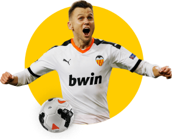

Cтань клиентом bwin и получи фрибет
на сумму первой ставки, если она не сыграет

Правила и условия
Букмекерская контора Bwin предлагает всем своим новым клиентам беспроигрышную сделку.
Если
ваша первая ставка на сайте букмекера окажется неудачной, компания вернет проигранную сумму в полном
объеме
в качестве фрибета. Этот бонус можно использовать для заключения нового пари, чистый выигрыш с которого
достанется вам. Правда, у кэшбека Bwin есть ограничение – максимальная сумма, которую готов
компенсировать
букмекер, равна 2000 рублей.
Как это работает
Букмекерская контора Bwin предлагает всем своим новым клиентам
беспроигрышную сделку
Вы регистрируетесь на сайте БК Bwin и проходите процедуру
идентификации личности
Делаете первую ставку на реальные деньги
Если проигрываете, получаете свои деньги назад в течение 30 минут с момента расчета
Условия акции распространяются на все типы пари, кроме «суперкоэффициентов» и «комбо+»
Полученный фрибет нужно использовать в течение 7 дней с момента его предоставления
Важные правила
В акции могут участвовать только новые пользователи или пользователи, которые до этого не
делали
ни
одной ставки
Фрибет можно использовать только в мобильных приложениях Bwin для iOS и Android